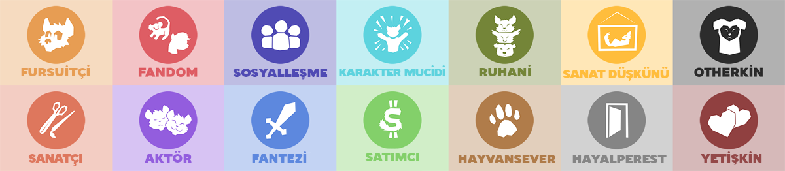
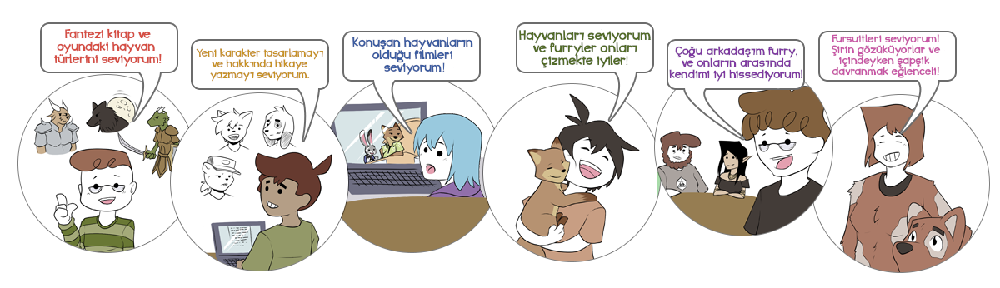
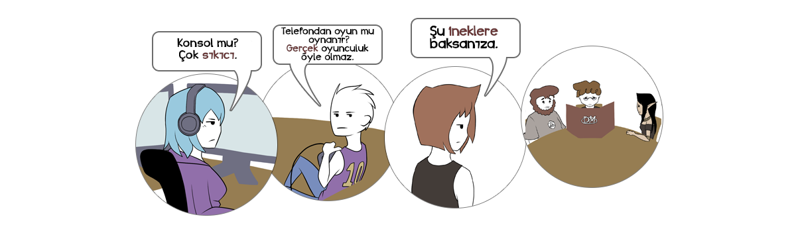
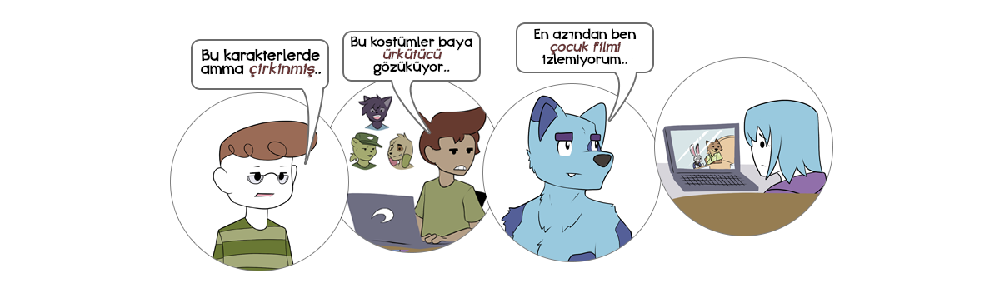
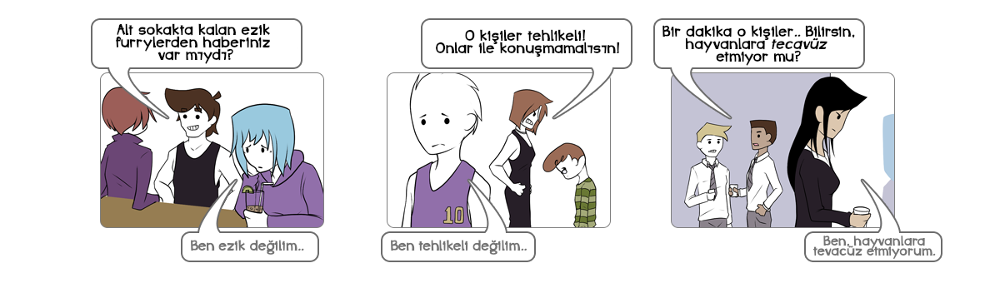
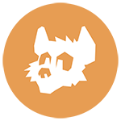
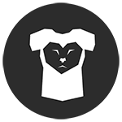
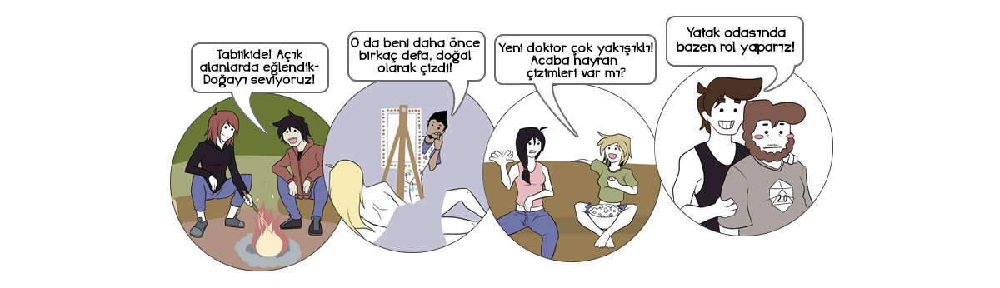

fur·ry
(isim)
anthropomorfik hayvan karakterlerden hoşlanan kimse.
Bu en güvenli, en genelleyici, en sıkıcı size verilebilecek bir cevap, aslen doğru olsa da, çok yardımcı değil.
Not: Daha Çeviri Yapım Aşamasındadır.
Tam olarak, furryler nedir ?
Daha iyi bir tanımlama yapmak zordur çünkü çok fazla kendilerini furry olarak tanımlayan vardır, hepside farklı ilgi alanlarına sahip, ve hepside nelerin furry olarak sayılacağı üzerine aynı karar almazlar.

Bir bakıma, "furry" sözcüğü "oyuncu" sözcüğüne çok benzerlik gösterir.
Kendilerini oyuncu olarak tanımlayan kişilerin çok fazla farklı sebepleri vardır:

Aynı şekilde kendilerini furry olarak tanımlayan kişilerin çok fazla sebepleri vardır:

Aslında ,bir bakıma oyuncular gibi, tüm furryler kendi aralarında anlaşayamabilir!


Furryler ve oyuncular arasındaki fark, ne kadar iyi anlaşıldıklarıdır. Herkes "oyuncu" sözcüğünün ne anlama geldiğini, ve tüm oyuncuların aynı olmadıklarını bilir.
Ama furryler, birçok insan için hala bir tür gizemdir.
Ve aynı daha oyunculuk gibi yeni yeni oluşmaya başladığında...
...çoğu haberler furrylerin kötü yanlarına odaklandılar:
Bu olaylar bile furryleri tam anlatmasada, kimse kötü birşey ile yargılanmayı sevmez.
Yinede, çoğu furry için, furry olmak büyük birşey değil, sadece ilgi alanlarından biridir!
Ama bazen, furryler, bazı tartışmaların konusu olabilirler, ve genellikle gariptir.

Eğer buraya göz atıyorsan, muhtemelen bazı bunun gibi tartışmaları duyduğunuzdan olabilir.
Ya da belkide kendinizi açıklamak için yol arayan bir furrysinizdir, veya daha önce hiç "furry" kelimesini duymadınız ve ne hakkında, ne olduğunu olduğunu öğrenmek için geldiniz.
Furryleri daha iyi tanımak için, Dünya çapından Furry count furry ile bilgi topladık.
Bu bilgiler sayfamızın anketine göre gerçek zamanda güncellenmektedir.
Önemli Hatırlatma: Bu sayfada toplanan bilgiler sadece furry toplumunun küçük bir parçasını göstermektedir. Güçlü fikirlere ve furry topluluğunda daha fazla bilgisi olan kişilerin ankete katılması daha olasıdır. "Sıradan" kişilerin ankete katılma olasılığı daha azdır.
Bir açıdan bakmak gerekirse, FurAffinity adlı en büyük furry temalı websitesi 5.000 ila 30.000 arasında aktif kullanıcı barındırmakta. Furaffinity yöneticileri ve üyeleri, Furaffinity'de 1.6 Milyon kayıt olmuş kullanıcısının olduğunu belirttiler (2016).
Furry Türlerİ



Çoğu ilgi alanlarının furry topluluğunda tutarlılığı olmamasına rağmen, Furryler arasında bazı yaygın, ortak ilgi alanları bulunmakta. Örnek olarak:
- Ankete katılan furrylerin activity: fursona'ünün kendilerine ait bir karakter oluşturmakta.
- Ankete katılan furrylerin fantasy'u oyunlarda, filmlerde ve kitaplardaki furry karakterleri görmekten hoşlanır.
- Ankete katılan furrylerin activity: socialize'i furry fandomunu sosyalleşme ve arkadaş edinmek için kullanmakta.
- Ankete katılan furrylerin sadece Furry: talkative'u açık ve rahat olarak furry topluluğu hakkında konuşmayı uygun görür.
- Ankete katılan furrylerin sadece otherkin'i insan vücuduna hapsolmuş bir hayvan olduklarını düşünür.
- Ankete katılan furrylerin sadece activity: owned fursuit'ü fursuit sahibi.
Furryleri dahada derinden anlamak için, furry topluluğunda olan kişilerin belirli sebeplerine bakalım.
Bu kategorilere tüm kategoriler dahil değildir, ve çoğu furry muhemelen 1'den fazla kategori ile ilgilenmekte.
Anekte katılan furrylerin fantasy'u özellikle fantezi oyunları, filmleri ve kitaplarında bulunan anthropomorfik karakter ve tür düşkünü.
Anekte katılan furrylerin socializer'ü furry topluluğunu yeni arkadaş ve sosyalleşme yeri olarak kullanmakta.
Anekte katılan furrylerinanimal lover'i hayvanları sevmekte, ve furrylerin yaptığı hayvan çizimlerini beğenmekte.
Anekte katılan furrylerinescapist'ü furry topluluğunu gerçek dünyadaki sıkıntılarından uzak durmak için kullanmakta.
Anekte katılan furrylerinconnoisseur'ü kendilerini furry içerikli olmasa bile genel olarak sanat düşkünü olduklarını belirtti.
Anekte katılan furrylerinreinventor'i kendilerini daha iyi, yeniden tasarlanmış bir karakter olarak düşlüyor.
Ankete katılan furrylerinactor'i kendi furry karakterleri ile rol yapmayı, sohbetlerde veya yazarak yapmayı severler.
Ankete katılan furrylerinfandom'si bazı furry maskotları olan spesifik markaların hayranıdırlar.
Ankete katılan furrylerinfursuiter'i fursuitlere ilgi duymakta: furry karakterlerine benzeyen, anthropomorfik hayvan kostümleri.
Ankete katılan furrylerinartist'ü kendi çizdikleri, yazdıkları hatta yaptıkları eserleri ile furry topluluğunda bulunmayı seviyor.
Ankete katılan furrylerindealer'i kendi çizdiği, yazdığı ya da yaptığı eserleri satarak kazanç sağlamakta.
Ankete katılan furrylerinspiritual'i hayvanlarla ruhani bir birliktelik hissettiklerini belirtti.
Ankete katılan furrylerinotherkin'i kendilerini therian ya da otherkin olarak tanımlarlar: kendilerinin insan vücuduna hapsolmuş bir hayvan olduğuna inananırlar.
Ankete katılan furrylerinadult'u furry fandomda cinsel aktivitelerde yeralmaktan hoşlandığını belirttiler. Genellikle bu tartışmaya açık bir konudur.
Tam olarak furryler ne yapar?
Bu genellikle furrylerin türüne göre değişiklik gösterir, ama konuşmaya değer bazı yaygın cevaplarda vardır.
Tabikide, tüm furrylerin yaptıkları burda listelenmedi.
Eğer bu sayfadan öğrenmek gereken birşey varsa, o da tüm furrylerin aynı olmadıklarıdır.. Birisinin eğlenceli bulduğunu, bir diğeri sıkıcı ya da saçma bulabilir.
Anthropomorfik karakterlerin olduğu medyalardan hoşlanırlar
Ankete katılan furrylerinactivity: mainstream media'u konuşan havyvan karaklerlerinin veya anthropomorfik fantezi türlerinin bulunduğu medyalardan hoşlandıklarını belirtti.
Çoğunlukla bu, kişilerin furry topluluğu ile ilgilenmesini sağlamakta.
Anthropomorfik karakterlere yer veren çok fazla film, televizyon dizileri, video oyunları ve kitaplar bulunmaktadır, ve bunlardan hoşlanmakta furrylerin en yaygın özelliklerinden biridir.
Tabii ki, bu şeyleri beğenmek içim furry olmaya gerek yoktur!
Sonuçta, Star Trek sevmeniz için kendinize "trekkie" demeniz gerek yoktur. Bu sadece ne kadar Star Trek sevdiğinizi gösterir.
Furryler ilk başta genellikle büyük animasyon, film(Lion King, Zootopia, My Little Pony, vb.), hayvan karakterli video oyunları(Starfox, Sly Cooper, Sonic, vb.), ya da anthropomorfik tür ve karakter içerenfantezi serileri(Dungeons & Dragons, Redwall, Chronicles of Narnia, vb.) hayranı olan kişiler olarak başlarlar.
Diğer furryler tarafından yapılan resimlere göz atarlar
Ankete katılan furrylerinactivity: furry media'i FurAffinity gibi siteleri furry çizimlerine, yazılarına vs. bakmak için kullandıklarını belirttiler.
Nihayetinde, çoğu furryler yalnız olmadıklarını; anthropomorfik karakterleri onlar kadar seven bir topluluk olduğunu, farklı geçmişleri olsa bile aynı ortak birşeyleri paylaşırlar.
Birisi furry topluluğunu keşfettiğinde, ilk yaptıkları şey genellikle furry çizimlerine, yazılarına, animasyonlarına ve birçok şeylere göz atmaya başlarlar.
Furrylerin uzaktanda olsa buluşmalarını, aynı ortak ilgi alanlarını paylaşmalarını, yaptığı çizimleri,hikayeleri paylaşmalarına yardımcı olacak siteler kurulmuştur. En büyüklerinden birkaç örnek olarak:
- FurAffinity; en büyük furry temalı websitesi, ana olarak sanat ve hikaye paylaşımına odaklanmıştır. Furaffinity'de bazı yetişkin içeriklerine izin vermekte ama sadece yetişkin hesaplar erişebilmektedir .
- /r/furry/; Reddit'in bir parçası olan "/r/Furry" topluluğu, herhangi bir konu uzerine forum açabilecekleri devasa bir websitesidir. "/r/Furry" topluluğunda yetişkin içerikler izin verilmemekte ama sanatsal çıplaklığa izin verilmektedir.
- DeviantArt; Ana olarak sanatsal paylaşımlar yapılan bu websitesi furryler için özellikle oluşturulmamıştır, ama büyük bir kısmını furry çizimleri oluşturmaktadır, yinede çoğu furry çizeri DevianArt'ı Furaffinity'e sıkı yetişkin içerik politikası nedeniyle daha çok tercih etmektedir.
Diğer furrylerle sosyalleşirler
Ankete katılan furrylerinactivity: socialize'i furry topluluğunu yeni arkadaş ve sosyaleşme amacıyla kullanmaktadır.
Furryler, genel bir kural olarak, arkadaş canlısıdır. Her topluluktada görülebileceği üzere, furry topluluğun tuhaflığı olabilmekte, ama çoğu furry nihayetinde yeni arkadaşlar bulmaya ve birlikte zaman geçirmeye başlarlar. Sosyalleşmeler çoğunlukla sohbet odalarında, internetten oyun oynayarak ya da sesli olarak sohbet ederek gerçekleşir
Bazen, furryler kendi favori furry karakterleri, çizimleri veya filmleri üzerine konuşurlar. Ama çoğunlukla furryler kimseden bir farkı olmadan sıradan gündelik konuları konuşurlar. Oyunlar, dünya/ülke gündemi, başlarına gelen acı/tatlı olayları anlatırlar. Unutulmamalıdır ki,furrylerin genellikle hakkında düşünülen bir konu olarak, kimse aynı bir konu üzerine herzaman konuşmaz. Bir zamandan sonra sürekli konuşulan konu bozmaya, sıkılmaya, artık ilgi çekici bir halden çıkmaya başlar.
Kendileri için furry karakterleri oluştururlar
Ankete katılan furrylerinactivity: fursona'ü kendilerine ait bir furry karakter oluşturduklarını belirtti.
Birisi furry topluluğu ile ilgilenmeye başlayınca, bir zamandan sonra kendilerine furry karakter oluştururlar. Bu karaklerler,çoğunlukla "fursona" denir, farklı kişilere farklı şeyler ifade eder.
Çoğu furryler için, kendi karakterlerini benimserler. Tam olarak kendilerini anımsatmasada, diğer furrylerle takılırkenki kişilikleri havalı duran bir karaktere dönüşür.
Diğer furryler için ise, kendi karakterleri sadece o kadardır, kitapta ya da filmde bulabileceğiniz bir karakter gibi. Kendilerini temsil etmesede, diğer furrlerle rol yaparken kullanırlar. Çoğu kişilere göre birden fazla, her birinin farklı kişilik ve dış görünüşlerinin olduğu karakterlere sahip olmak yaygındır.
Kendi karakterleri olarak rol yapma oyunu oynarlar
Ankete katılan furrylerinactivity: roleplay'sı kendi karakterleri olarak rol yapma oyunlarına katıldıklarını belirtti. Bu aktivite, furrylerin bir kısmı için furryliğin ana unsurunu oluştururken, diğerleri için utanç verici, sıkıcı veya sinir bozucu bulurlar.
Bazı furry gruplarında, kendi karakterleri olarak uzun süreliğine sohbet etmek yaygındır. Bu furrylere göre, her etkileşim ve konuşmalar kendi karakterlerinin davranışları ve kişiliklerini keşfetmek için bir fırsattır. Bu genellikle kendi karakterlerini diğer yakındaki karakterlerle etkileşimde bulunmak isteyen "aktör" furrylerin arasında yaygındır.
In other furry groups, roleplay is seen as cringe-inducing, and furries who roleplay are seen as detrimental to the furry community's public image. These furries often feel that roleplay suffers from two problems: it is often very juvenille, lacking any sort of real nuance or character development, and it often devolves into flirtation. When flirtatious roleplay happens, the stark contrast between the attractiveness of furry characters and their owners is often called out as a key cringe-inducing element.
Even among furries who do not roleplay, however, it is not uncommon to make quips and casual observations based on a person's character. There are many stereotypes in the furry community, and those stereotypes are a frequent topic of conversation. For instance, furries with fox characters are often seen as promiscuous, and when furries are discussing relationship problems, they might poke fun at someone for "dating a fox" in the first place.
Draw, write, or exercise their creativity
activity: art of surveyed furries have drawn furry artwork, written furry stories, or created other furry media.
Because furry characters exist only in fantasy, many furries pour an exhausting amount of effort into realizing their characters through art and writing. Not all furries have artistic talent, but because the community is very art-focused, furries are often encouraged to exercise their creativity.
Even furries who do not draw or write on a regular basis will often try their hand at art in order to design a character for themselves. Because the furry community is overwhelmingly inviting, art of any quality usually receives a positive reaction, and this positive reinforcement often encourages the artist to keep practicing.
Many furries enter the community with no artistic background, and eventually develop a modicum of talent and confidence that they can put to use elsewhere in their lives.
Commission custom artwork of their character
activity: commission of surveyed furries have purchased custom furry artwork, stories, or other media for themselves.
Whether a furry has artistic talent or not, they will often be impressed or inspired by the talent and style of artists around them. Eventually, many furries will pay another artist to draw or write about their character for them.
For many furries, seeing their character realized by someone else is much more exciting than drawing it themselves. This is especially true for actors and reinventors, as well as socializers who use their character's popularity to make new friends.
Other furries, particularly fandom and fantasy furries, will pay to have their characters drawn with popular characters from mainstream media, or as part of existing fantasy universes. For these furries, artwork is less about popularity and more about expression and storytelling.
Like most entertainment and luxury industries, the furry artwork industry is one where a small minority of users spends a disproportionately high amount of money. These furries often become popular simply because of the sheer volume or quality of art they've commissioned, as their characters become recognized as sort of a "furry celebrity." (occasionally called a "popufur")
Go to local hangouts with other furries
activity: local meetup of surveyed furries have gone to a small, local meetup with other furries.
Local meetups allow small groups of furries to meet up for group activities. Common activities include charity events, cookouts, camping, gaming, bowling, movies, or holiday parties. Meetup attendance varies tremendously - some meetups host just a handful of local furries, while others attract hundreds of furries.
Sometimes, furries are allowed and encouraged to wear their fursuits during these activities (if they own a fursuit - only about activity: owned fursuit of furries do). Other times, especially when meeting in a public, shared space that has not been reserved for the meetup, furries will be asked not to suit.
Local meets are usually hosted and managed by a local furry community, or by individual furries with wide social circles who are very active in their area.
Go to furry conventions
activity: convention of surveyed furries have gone to a furry convention.
Furry conventions are large gatherings of furries from all across the country - or even the world - who meet up for a few days to socialize, buy and sell furry artwork and merchandise, wear and watch fursuits, and - most importantly - meet friends that they've made through the furry community.
Furry conventions are especially important for socializers, who may only be able to see their online furry friends at conventions for a few days each year, and for fursuiters, who often spend a tremendous portion of the convention fursuiting and participating in fursuit-specific activities like fursuit games, fursuit talent/dance competitions, or fursuit panels.
For furries who are particularly active in the adult side of the fandom, or for furries who have formed long-distance relationships through the furry community, conventions are also an opportunity to engage physically with other furries. Because these windows of opportunity are so short and sparse, many furries (con reason: sex) list sex as one of the reasons they attend furry conventions, leading many to believe that furry conventions are sex-centric events.
In reality, only con main reason: sex of surveyed furries say that sex is one of the main reasons they attend furry conventions, and only con main reason: casual sex attend furry conventions specifically looking for casual sex.
Some of the most common reason furries attend furry conventions include:
- con reason: meet existing friends: To meet existing friends
- con reason: make new friends: To make new friends
- con reason: watch fursuits: To watch fursuiters
- con reason: room parties: To attend small room parties
- con reason: buy: To buy furry art and merchandise
Fursuit
Fursuits are one of the first things people think of when they think about furries, despite the fact that only activity: worn fursuit of surveyed furries have worn a fursuit, and only activity: owned fursuit actually own one.
The fursuiting community is almost as diverse as the furry community itself, and people fursuit for many reasons:
To feel more comfortable expressing themselves
fursuit score: comfort
To socialize with other fursuiters and furries
fursuit score: socialize
To escape from the worries of the world and have fun
fursuit score: escape
To make people happy by acting cute or funny
fursuit score: perform
To feel more like their characters
fursuit score: character
They like wearing costumes and masks in general
fursuit score: costume
They like giving hugs to make people feel good
fursuit score: hugs
Adult reasons
fursuit score: adult
To show appreciation for a specific franchise
fursuit score: franchise
Sell art, writing, games, or other merchandise / services
activity: paid of surveyed furries make money by selling their furry artwork, stories, or other goods and services.
Like any other community, there are many ways for savvy artists, writers, animators, and other creative enterpreneurs to profit from the furry community. Some of these profiteers are furries doing services for other furries, while others are talented outsiders looking at ways to engage the relatively-untapped market.
Some of the most common revenue streams in the furry community include:
- Custom art/writing commissions: Furries will often pay artists and writers to create custom art/literature about their character. Over time, many artists have transitioned away from this model to the YCH model, described below.
- "Your Character Here" (YCH) auctions: Rather than creating custom artwork from scratch, some artists will sketch out a scene or picture that they want to draw, then allow furries to bid to have their characters used in the final picture. While some furries dislike the lack of control offered by YCH auctions, others appreciate that the artists have a stronger creative say in the final piece.
- Paywalled content: Once an artist has amassed a sizeable following, they may begin to paywall some of their content, requiring viewers to pay a monthly fee (often using a service like Patreon) in order to view it. This model is especially popular among adult artists, who will commonly post censored, clothed, or low-resolution versions of their art in a free gallery, then offer their supporters high-resolution, uncensored versions.
- Donations / soft paywalls: Some artists choose not to hide their content behind a paywall, instead relying on the generosity of their audience to keep them afloat. The rise of Patreon as a crowdfunding service has a played an important role in this business model, as it effectively allows an artist/creator to create whatever they like, and allows their audience to support them on a regular, predictable basis, so long as the artist keeps producing content they enjoy. Some artists will also offer special perks to people who support them, like the ability to vote on upcoming projects, or sneak previews of things they're working on.
Adult things
activity: viewed adult content of surveyed furries look at adult furry content.
Sex is a very divisive subject, for furries. Some furries (sex: yes) believe that the fandom is primarily about sex, while others (sex: no) believe that sex has no place in the fandom.
The vast majority (sex: can be) of furries, however, believe that the community is not inherently about sex, but that sex can be brought into it.
Sure enough, most of the community (activity: viewed adult content) has intentionally viewed adult furry content. It's hard to determine how this number compares to the general public's rate of pornography consumption, but it's safe to say that most furries enjoy furry pornography, just as most non-furries enjoy regular pornography.
Because this is a big topic in the furry community, we've given it its own section, below.
Is it a sex thing?
No.
sex: no of surveyed furries
No, but it can be.
sex: can be of surveyed furries
Yes.
sex: yes of surveyed furries
Sex is often a point of controversy and disagreement, for furries. Generally speaking, though, the furry community has a little bit more to do with sex than most furries like to admit, but much less than outsiders often believe.
Most people enjoy sex. And because people are creative and experimental, they will occasionally try to mix up sex with their other hobbies.
If you were to round up a bunch of non-furry people, and they were completely honest with you, you might hear things like:

Furries are sometimes the same way. It's not that the furry community is about sex, but we do sometimes drag sex into it.
But there's a little bit more to it than just that.
There are a few characteristics of the furry community that all come together to make furries just a little bit more sex-oriented than the general population:
-
Furries aren't mainstream, so the community attracts explorers and outcasts.
The furry community is still sort of a "hidden" culture, and because of that, most furries are the type of people who are different, adventurous, and exploratory enough to find it, in the first place.
Oftentimes, people who are adventurous enough to try out the furry community are also very adventurous and exploratory when it comes to sex.
-
Furries are often open-minded about tricky subjects.
Like any group of misfits, the furry community is very slow to judge people for being open and honest. Everyone in the furry community is there because they enjoy something weird, and that same open-mindedness and acceptance is shown to people who start opening up about sex.
-
Human creativity often results in porn, and furries are usually creative.
Give a caveman a log and a knife, and he will eventually carve a fertility idol. Give a Greek artist paint, and she will eventually paint Aphrodite. Give an Indian sculptor stone, and he will eventually carve the Khajuraho Monuments.
The furry community is a very creative community - it has a very high concentration of artists, writers, and animators. Even furries who are not artists themselves are usually part of the community because they enjoy something that other artists make: art, books, movies, TV shows, or video games.
Creative minds like to explore all aspects of humanity: adventure, drama, comedy, and sex - often through pornographic art.
-
Adolescent males are a large part of the furry demographic.
Many furries come from environments where sex is taboo, and stumble across the furry community just as they are beginning to explore their sexuality.
When they discover an environment where their exploration of sexuality is not only allowed, but encouraged and reciprocated, it tends to result in an explosive surge of interest.
When all of these factors combine, you end up with a community that may not be about sex, but is very sex-positive.
Most furries view sex as something healthy, fun, and natural, and have very little shame drawing it, looking at it, and talking about it openly.
There are many misconceptions about sex in the furry community.
When people try to guess what furry sexuality is about, they often imagine one of three things: bizarre fursuit parties, leashes and collars, or zoophilia.
In reality, only about like: murrsuits of surveyed furries like the idea of having sex in fursuits, like: puppy play are interested in "pet play", and only like: zoo of surveyed furries have any attraction to animals.
The thing that most furries are interested in is pornographic artwork (like: art) or literature (like: literature) featuring anthropomorphic characters.
Occasionally, these characters resemble cartoon characters from popular movies or TV shows. Other times, they depict characters from video games or fantasy worlds. Most of the time, however, the characters seen in furry pornography are original creations - characters made by furries.
Like the furry community as a whole, furry pornography is something people enjoy for many different reasons:
It often portrays a progressive, sex-positive philosophy
adult content: sex positive
It features characters that are more exotic and interesting than humans
adult content: exotic
It feels more expressive, genuine, and "real" than commercial porn
adult content: expressive
It helps them explore fetishes that are impossible or dangerous in real life
adult content: impossibility
It shares common ground with other, non-furry fetishes, like pet play or zoophilia
adult content: fursuits
Among furries who enjoy furry pornography, furry porn: enjoy or okay say they don't need furry pornography: it's just something they enjoy in addition to normal pornography.
Beyond pornographic art, there are a few other adult outlets that furries sometimes enjoy:
Erotic Roleplay
like: erp of surveyed furries
Furry Sex Toys
like: sex toys of surveyed furries
Fursuit Sex
like: murrsuits of surveyed furries
Many people enjoy sex without letting it define who they are. In the same way, sex is not a defining characteristic of the furry community: it's just something that many furries enjoy in the background.